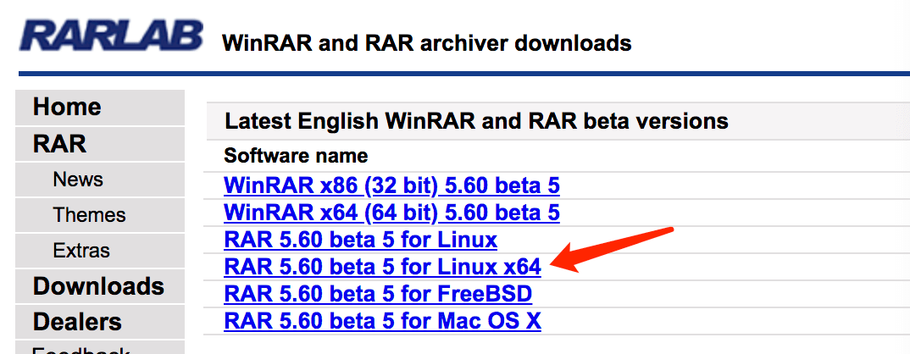

Linux でよく使われる圧縮・解凍コマンドには、tar、gzip、gunzip、bzip2、bunzip2、compress、uncompress、zip、unzip、rar、unrar などがあります。
tar
最もよく使われるアーカイブ作成コマンドは tar です。tar プログラムで作成したアーカイブを一般に tar ボールと呼びます。tar ボールのファイル名は通常 .tar で終わります。tar ボールを生成した後、他のプログラムで圧縮することができます。そこで、まず tar コマンドの基本的な使い方を説明します。
tar コマンドのオプションは多数あります（man tar で確認できます）が、よく使われるのはほんのわずかです。以下で例を挙げて説明します。
# tar -cf all.tar *.jpg
このコマンドは、すべての .jpg ファイルを all.tar という名前のアーカイブにまとめます。-c は新しいアーカイブを作成することを示し、-f はアーカイブのファイル名を指定します。
# tar -rf all.tar *.gif
このコマンドは、すべての .gif ファイルを all.tar に追加します。-r はファイルを追加することを意味します。
# tar -uf all.tar logo.gif
このコマンドは、元の tar アーカイブ all.tar 内の logo.gif ファイルを更新します。-u はファイルを更新することを意味します。
# tar -tf all.tar
このコマンドは、all.tar 内のすべてのファイルを一覧表示します。-t はファイルを一覧表示することを意味します。
# tar -xf all.tar
このコマンドは、all.tar からすべてのファイルを展開します。-x は展開することを意味します。
以上が tar の最も基本的な使い方です。ユーザーがアーカイブの作成・展開と同時にファイルを圧縮・解凍できるように、tar には特別な機能が用意されています。それは、tar がアーカイブ作成・展開時に gzip や bzip2 などの他の圧縮プログラムを呼び出せるというものです。
1) tar の呼び出し
gzip は GNU 組織によって開発された圧縮プログラムで、.gz で終わるファイルは gzip による圧縮結果です。gzip に対応する解凍プログラムは gunzip です。tar では -z オプションを使って gzip を呼び出します。以下で例を挙げて説明します。
# tar -czf all.tar.gz *.jpg
このコマンドは、すべての .jpg ファイルを tar アーカイブにまとめ、それを gzip で圧縮して、gzip 圧縮されたアーカイブ all.tar.gz を生成します。
# tar -xzf all.tar.gz
このコマンドは、上記で生成されたアーカイブを展開します。
2) tar での bzip2 の呼び出し
bzip2 はより強力な圧縮能力を持つ圧縮プログラムで、.bz2 で終わるファイルは bzip2 による圧縮結果です。
bzip2 に対応する解凍プログラムは bunzip2 です。tar では -j オプションを使って bzip2 を呼び出します。以下で例を挙げて説明します。
# tar -cjf all.tar.bz2 *.jpg
このコマンドは、すべての .jpg ファイルを tar アーカイブにまとめ、それを bzip2 で圧縮して、bzip2 圧縮されたアーカイブ all.tar.bz2 を生成します。
# tar -xjf all.tar.bz2
このコマンドは、上記で生成されたアーカイブを展開します。
3) tar での compress の呼び出し
compress も圧縮プログラムですが、gzip や bzip2 ほど多くの人には使われていないようです。.Z で終わるファイルは compress による圧縮結果です。compress に対応する解凍プログラムは uncompress です。tar では -Z オプションを使って compress を呼び出します。以下で例を挙げて説明します。
# tar -cZf all.tar.Z *.jpg
このコマンドは、すべての .jpg ファイルを tar アーカイブにまとめ、それを compress で圧縮して、compress 圧縮されたアーカイブ all.tar.Z を生成します。
# tar -xZf all.tar.Z
このコマンドは、上記で生成されたアーカイブを展開します。
以上の知識があれば、さまざまな圧縮ファイルを展開できるようになるでしょう。以下に tar 系の圧縮ファイルについてまとめます。
1) .tar で終わるファイルの場合
tar -xf all.tar
2) .gz で終わるファイルの場合
gzip -d all.gz gunzip all.gz
3) .tgz または .tar.gz で終わるファイルの場合
tar -xzf all.tar.gz tar -xzf all.tgz
4) .bz2 で終わるファイルの場合
bzip2 -d all.bz2 bunzip2 all.bz2
5) .tar.bz2 で終わるファイルの場合
tar -xjf all.tar.bz2
6) .Z で終わるファイルの場合
uncompress all.Z
7) .tar.Z で終わるファイルの場合
tar -xZf all.tar.z
また、Windows でよく見られる圧縮ファイル .zip や .rar についても、Linux にはそれらを解凍する方法が用意されています。
1) .zip の場合
Linux には zip と unzip プログラムがあります。zip は圧縮プログラム、unzip は解凍プログラムです。これらのオプションは多数ありますが、ここでは簡単に説明し、例を挙げて使い方を示します。
# zip all.zip *.jpg
このコマンドは、すべての .jpg ファイルを zip アーカイブに圧縮します。
# unzip all.zip
このコマンドは、all.zip 内のすべてのファイルを解凍します。
2) .rar の場合
Linux で .rar ファイルを扱うには、RAR for Linux をインストールする必要があります。ダウンロード先：http://www.rarsoft.com/download.htm、ダウンロード後にインストールしてください。
# tar -xzpvf rarlinux-x64-5.6.b5.tar.gz # cd rar # make
これでインストール完了です。インストール後、rar と unrar の2つのプログラムが使えます。rar は圧縮プログラム、unrar は解凍プログラムです。これらのオプションは多数ありますが、ここでは簡単に説明し、例を挙げて使い方を示します。
# rar a all *.jpg
このコマンドは、すべての .jpg ファイルを all.rar という rar アーカイブに圧縮します。このプログラムは、.rar 拡張子をアーカイブ名の後に自動的に付加します。
# unrar e all.rar
このコマンドは、all.rar 内のすべてのファイルを解凍します。
# unrar x all.rar
このコマンドは、all.rar 内のすべてのファイルをディレクトリ階層に従って解凍します。
拡張内容
tar
-c: 建立压缩档案 -x：解压 -t：查看内容 -r：向压缩归档文件末尾追加文件 -u：更新原压缩包中的文件
これら5つは独立したコマンドで、圧縮・解凍のいずれかを使用します。他のコマンドと組み合わせることはできますが、使用できるのはそのうちの1つだけです。以下のオプションは、アーカイブの圧縮または解凍時に必要に応じて選択できます。
-z：有gzip属性的 -j：有bz2属性的 -Z：有compress属性的 -v：显示所有过程 -O：将文件解开到标准输出
以下のオプション -f は必須です。
-f: 使用档案名字，切记，这个参数是最后一个参数，后面只能接档案名。# tar -cf all.tar *.jpg
このコマンドは、すべての .jpg ファイルを all.tar という名前のアーカイブにまとめます。-c は新しいアーカイブを作成することを示し、-f はアーカイブのファイル名を指定します。
# tar -rf all.tar *.gif
このコマンドは、すべての .gif ファイルを all.tar に追加します。-r はファイルを追加することを意味します。
# tar -uf all.tar logo.gif
このコマンドは、元の tar アーカイブ all.tar 内の logo.gif ファイルを更新します。-u はファイルを更新することを意味します。
# tar -tf all.tar
このコマンドは、all.tar 内のすべてのファイルを一覧表示します。-t はファイルを一覧表示することを意味します。
# tar -xf all.tar
このコマンドは、all.tar からすべてのファイルを展開します。-x は展開することを意味します。
圧縮
tar –cvf jpg.tar *.jpg // 将目录里所有jpg文件打包成 jpg.tar tar –czf jpg.tar.gz *.jpg // 将目录里所有jpg文件打包成 jpg.tar 后，并且将其用 gzip 压缩，生成一个 gzip 压缩过的包，命名为 jpg.tar.gz tar –cjf jpg.tar.bz2 *.jpg // 将目录里所有jpg文件打包成 jpg.tar 后，并且将其用 bzip2 压缩，生成一个 bzip2 压缩过的包，命名为jpg.tar.bz2 tar –cZf jpg.tar.Z *.jpg // 将目录里所有 jpg 文件打包成 jpg.tar 后，并且将其用 compress 压缩，生成一个 umcompress 压缩过的包，命名为jpg.tar.Z rar a jpg.rar *.jpg // rar格式的压缩，需要先下载 rar for linux zip jpg.zip *.jpg // zip格式的压缩，需要先下载 zip for linux
解凍
tar –xvf file.tar // 解压 tar 包 tar -xzvf file.tar.gz // 解压 tar.gz tar -xjvf file.tar.bz2 // 解压 tar.bz2 tar –xZvf file.tar.Z // 解压 tar.Z unrar e file.rar // 解压 rar unzip file.zip // 解压 zip
まとめ
1、*.tar 用 tar –xvf 解压 2、*.gz 用 gzip -d或者gunzip 解压 3、*.tar.gz和*.tgz 用 tar –xzf 解压 4、*.bz2 用 bzip2 -d或者用bunzip2 解压 5、*.tar.bz2用tar –xjf 解压 6、*.Z 用 uncompress 解压 7、*.tar.Z 用tar –xZf 解压 8、*.rar 用 unrar e解压 9、*.zip 用 unzip 解压
TREE
463***45@qq.com
Windows でよく見られる圧縮形式は rar と zip ですが、Linux も .zip と .rar ファイルの解凍をサポートしています。
また、Windows でよく見られる圧縮ファイル .zip や .rar についても、Linux にはそれぞれ解凍方法があります。
1: .zip の場合
Linux には zip と unzip プログラムがあります。zip は圧縮プログラム、unzip は解凍プログラムです。これらのオプションは多数ありますが、ここでは簡単に説明し、例を挙げて使い方を示します。
zip コマンドを使って複数のファイルやディレクトリを同時に処理できます。それらを列挙し、スペースで区切ります：
上記のコマンドは、file1、file2、file3、および /usr/work/school ディレクトリの内容（このディレクトリが存在すると仮定）を圧縮して、filename.zip ファイルにまとめます。
2: .rar の場合
ダウンロード先：https://www.rarlab.com/download.htm（現在の最新は RAR 5.60 for Linux）、最新のものを基準にしてください。

ダウンロード後、インストールします：
これでインストール完了です。インストール後、rar と unrar の2つのコマンドが使えます。rar は圧縮コマンド、unrar は解凍コマンドです。これらのオプションは多数ありますが、例を挙げて使い方を説明します。
このコマンドは、すべての .jpg ファイルを all.rar という rar アーカイブに圧縮します。このプログラムは、.rar 拡張子をアーカイブ名の後に自動的に付加します。
このコマンドは、all.rar 内のすべてのファイルを解凍します。
TREE
463***45@qq.com
FSAcdf
sdf***faa@qq.com
以下では、.tar.gz 形式のファイルの圧縮と解凍方法を紹介します。
1、圧縮コマンド：
コマンド形式：
まず現在のディレクトリに切り替えても構いません。圧縮ファイル名と圧縮対象ファイル名にはどちらもパスを含めることができます。
2、解凍コマンド：
コマンド形式：
解凍したファイルは現在のディレクトリにのみ置くことができます。
FSAcdf
sdf***faa@qq.com
祁向楠
394***945@qq.com
参考アドレス
指定した複数のファイルを1つのファイルに圧縮する
ファイルfile1とfile2を圧縮し、圧縮成功後のファイルはmy.tar.gzです
祁向楠
394***945@qq.com
参考アドレス